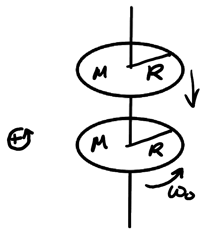

Momentum
Table of Contents
1. Linear Momentum
In classical physics, linear momentum is defined as:
\begin{align} \boxed{\vec{p} = m\vec{v}} \end{align}The original form of Newton's 2nd law states that the rate of change of momentum of an object is equal to the net force applied to it, or:
\begin{align} \boxed{\vec{F}_{\text{net}} = \frac{\text{d}\vec{p}_{\text{tot}}}{\text{d}t}} \end{align}1.1. Conservation of Linear Momentum
For systems such that the external net force is zero, then the change in momentum by Newton's 2nd law is zero, so then the momentum is constant. This is known as the conservation of linear momentum.
1.2. Impulse
Impulse, \(\vec{J}\), is the force applied over a period of time, or the change in linear momentum:
\begin{align} \boxed{\vec{J} = \Delta \vec{p} = \int \vec{F}_{\text{net}} \text{ d}t} \end{align}1.3. Systems of Variable Mass
We can consider systems of variable mass as consisting of an inelastic collision between a main mass \(m\) with a certain velocity and a small change in mass \(\text{d}m\) such that it results in the system's mass varying to \(m + \text{d}m\):
The initial and final momentum of the system is:
\begin{align} \vec{p}_i &= m\vec{v} + \text{d}m\vec{u} \notag \\ \vec{p}_f &= (m+\text{d}m)(\vec{v} + \text{d}\vec{v}) \notag \end{align}Then, the total difference in momentum is:
\begin{align} \text{d}\vec{p} &= \vec{p}_f-\vec{p}_i \notag \\ &= (m+\text{d}m)(\vec{v} + \text{d}\vec{v}) - m\vec{v} - \text{d}m\vec{u} \notag \\ &= m\text{d}\vec{v} + \text{d}m(\vec{v}-\vec{u}) \notag \end{align}We know that by Newton's 2nd law, the rate of change of momentum is equal to the net external force, so:
\begin{align} \vec{F}_{\text{ext}} = m\frac{\text{d}\vec{v}}{\text{d}t} + \frac{\text{d}m}{\text{d}t}(\vec{v} - \vec{u}) = m\frac{\text{d}\vec{v}}{\text{d}t} - \vec{v}_{\text{rel}}\frac{\text{d}m}{\text{d}t} \notag \end{align}where \(\vec{v}_{\text{rel}} = \vec{u}-\vec{v}\). We can rewrite this to get the following, for systems of variable mass:
\begin{align} \boxed{\vec{F}_{\text{ext}} + \vec{v}_{\text{rel}}\frac{\text{d}m}{\text{d}t} = m\frac{\text{d}\vec{v}}{\text{d}t}} \end{align}We see that when the mass of our system changes, we have an additional force other than our external force that is imparted on the system which causes acceleration. This external force is thrust.
Example: Rocket burning fuel
Consider a rocket as it burns fuel for thrust. Assume there is no resistance, so gravity is the only external force. The fuel molecules expelled push downward with a constant relative velocity \(\vec{v}_{\text{rel}}\). Given the mass changes over time according to \(m(t)\), find \(v(t)\), the velocity as a function of time of the rocket:
From (4), we know that:
\begin{align} \vec{F}_{\text{ext}} + \vec{v}_{\text{rel}}\frac{\text{d}m}{\text{d}t} &= m\frac{\text{d}\vec{v}}{\text{d}t} \notag \\ -mg + v_{\text{rel}}\frac{\text{d}m}{\text{d}t} &= m\frac{\text{d}v}{\text{d}t} \notag \\ -g \text{ d}t + \frac{v_{\text{rel}}}{m}\text{d}m &= \text{d}v \notag \end{align}Integrating on both sides, we get:
\begin{align} \int_{v_0}^{v(t)}\text{d}v &= -g\int_0^t \text{d}t + v_{\text{rel}}\int_{m_0}^{m(t)} \frac{\text{d}m}{m} \notag \\ v(t) - v_0 &= -gt + v_{\text{rel}} \ln \left(\frac{m(t)}{m_0}\right) \notag \end{align}Since the rocket starts from rest, the velocity is:
\begin{align} \boxed{v(t) = -gt + v_{\text{rel}}\ln\left(\frac{m(t)}{m_0}\right)}\notag \end{align}Note that since \(v\) does not vary linearly over time, \(a\) is not a constant. Thus, kinematic equations cannot be used to analyze these systems!
2. Angular Momentum
Angular momentum, by analogy with linear momentum, is:
\begin{align} \boxed{\vec{L} = I\vec{\omega}} \end{align}for systems whose axis of rotation is fixed or axis of fixed direction going through the center of mass.
The angular velocity, \(\vec{\omega}\), points perpendicular to the plane in which rotational motion occurs, with the direction given by the right-hand rule. If the system speeds up, \(\vec{\alpha}\) points in the same direction as \(\vec{\omega}\); otherwise, it opposes \(\vec{\omega}\).
We can also find Newton's 2nd law with angular momentum:
\begin{align} \boxed{\vec{\tau}_{\text{ext}} = \frac{\text{d}\vec{L}_{\text{tot}}}{\text{d}t}} \end{align}If there is no external torque, then the total momentum is constant (which means total angular momentum is conserved).
Example: Rotational disk collision
Consider a spinning disk such that there is a stationary disk that is held at first above the spinning disk, which is then dropped onto the spinning disk:

After the collision, both disks stick together and rotate as a single system. We want to find \(\omega_f\), the final angular speed.
This is an inelastic rotational collision, so angular momentum is conserved but rotational kinetic energy is not. Thus, by conservation of angular momentum:
\begin{align} \frac{MR^2}{2}\omega_0 + 0 &= \frac{2MR^2}{2}\omega_f \notag \\ \frac{MR^2\omega_0}{2} &= MR^2\omega_f \notag \end{align}Therefore, we have:
\begin{align} \boxed{\omega_f = \frac{\omega_0}{2}} \notag \end{align}2.1. Angular Momentum of Translational Motion
A point mass moving in translation also carries angular momentum, as can be observed if a ball causes a rotating beam to spin upon contact:
The rod is initially stationary, but starts spinning after the mass hits it. We can express this in terms of radius \(r\) and linear momentum \(p\):
\begin{align} \boxed{\vec{L} = \vec{r} \times \vec{p}} \end{align}for a point mass. Expanding this, we find that the magnitude is:
\begin{align} \left|\vec{L}\right| = rmv\sin\theta \end{align}Example: Kid jumping on merry-go-round
Consider a kid that jumps onto a rotating merry-go-round:
We want to find the final angular speed \(\omega_f\) when the kid and the platform are rotating together. The angular momentum due to translational motion of the kid, by (8), is:
\begin{align} L_{\text{kid}} = mv\frac{R}{2}\sin 90^{\circ} = \frac{mvR}{2} \notag \end{align}Combined with the platform momentum, we can find the total momentum right before the kid lands on the platform:
\begin{align} L_{\text{platform}} &= \frac{MR^2}{2}\omega_0 \notag \\ L_i &= \frac{mvR}{2} + \frac{MR^2}{2}\omega_0 \notag \end{align}Once the kid lands on the platform, the final rotational inertia changes to become \(I_f = \frac{MR^2}{2} + m\left(\frac{R}{2}\right)^2\), so by conservation of angular momentum, we have:
\begin{align} \frac{mvR}{2} + \frac{MR^2}{2}\omega_0 = \left( \frac{MR^2}{2} + \frac{mR^2}{4}\right)\omega_f \notag \end{align}Therefore, the final angular speed is:
\begin{align} \boxed{\omega_f = \frac{mvR + MR^2\omega_0}{MR^2 + \frac{mR^2}{2}}} \notag \end{align}